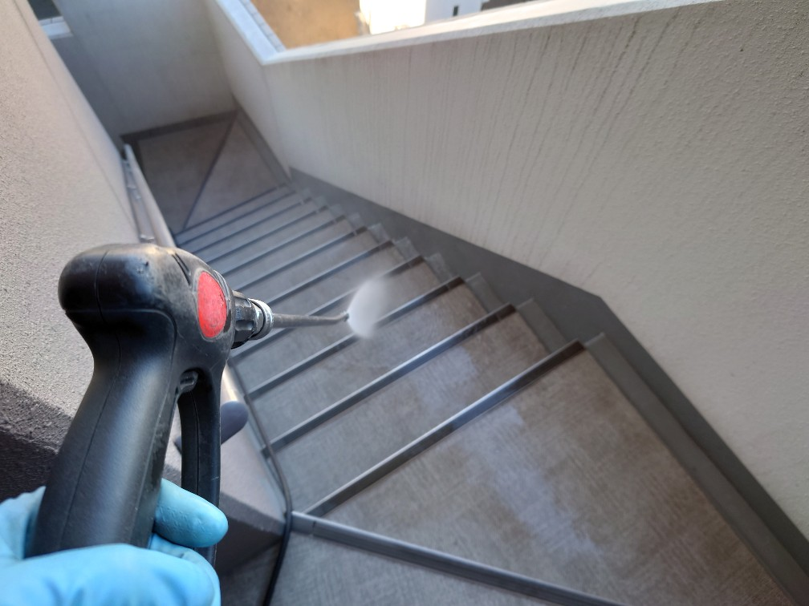
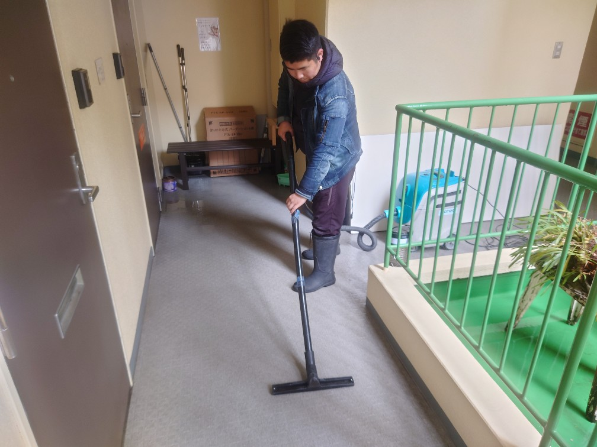
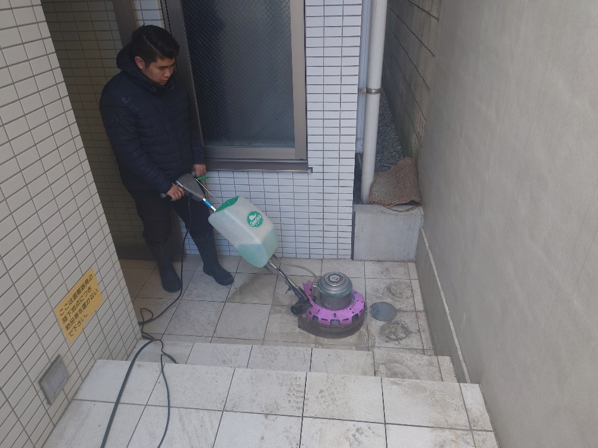
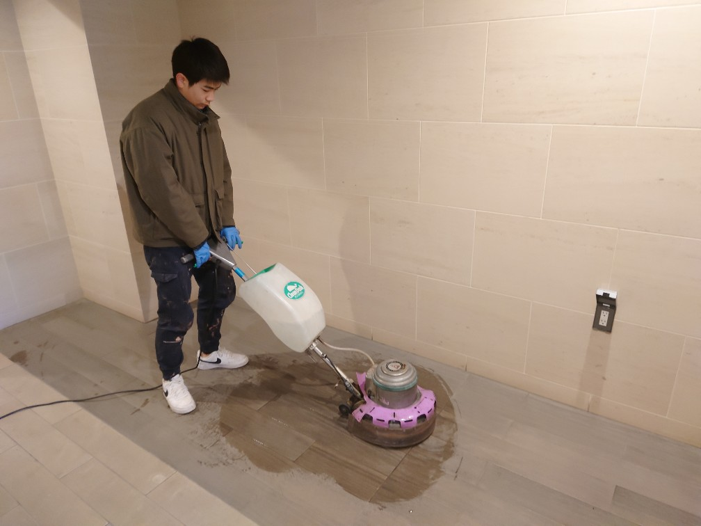
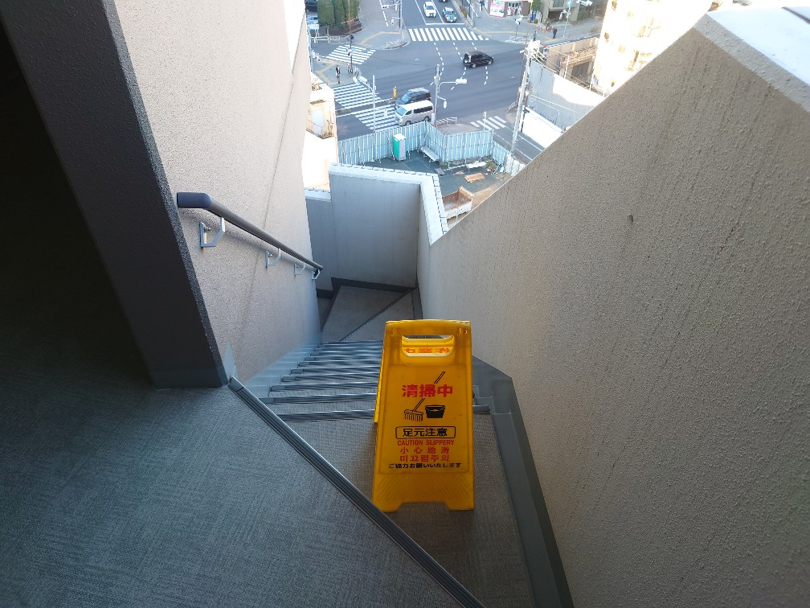

2023年2月1日 寒波で高圧洗浄の水が凍りました!板橋区のＯマンション様定期清掃を実施しました!     早朝の気温は0℃前後でしたが、高圧洗浄クリーニングで排出された水が階段の排水溝を伝うと見る見る凍って行きました。シャーベット状になり、そのままカチンコチンの氷が出来ました。毎年この1番寒い季節は、水道管が凍って水が出なかったり、床面が凍って滑ったり、安全作業セキュリティ上の留意点が沢山有ります。DAIZENではこの様な気象の難しい環境下でも多数クリアして清掃を実施している経験がございますのでご安心下さい！ 早朝の気温は0℃前後でしたが、高圧洗浄クリーニングで排出された水が階段の排水溝を伝うと見る見る凍って行きました。シャーベット状になり、そのままカチンコチンの氷が出来ました。毎年この1番寒い季節は、水道管が凍って水が出なかったり、床面が凍って滑ったり、安全作業セキュリティ上の留意点が沢山有ります。DAIZENではこの様な気象の難しい環境下でも多数クリアして清掃を実施している経験がございますのでご安心下さい！